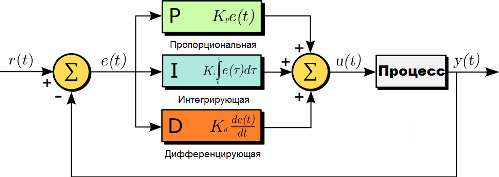
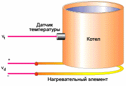
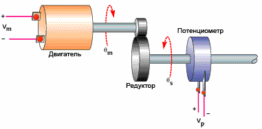
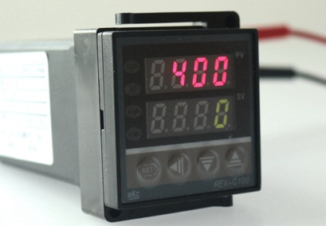

ПИД (от англ. P-proportional, I-integral, D-derivative) — регулятором называется устройство, применяемое в контурах управления, оснащенных звеном обратной связи. Данные регуляторы используют для формирования сигнала управления в автоматических системах, где необходимо достичь высоких требований к качеству и точности переходных процессов.
Управляющий сигнал ПИД-регулятора получается в результате сложения трех составляющих: первая пропорциональна величине сигнала рассогласования, вторая — интегралу сигнала рассогласования, третья — его производной. Если какой-то из этих трех компонентов не включен в процесс сложения, то регулятор будет уже не ПИД, а просто пропорциональным, пропорционально-дифференцирующим или пропорционально-интегрирующим.

Первый компонент — пропорциональный
Выходной сигнал дает пропорциональная составляющая. Сигнал этот приводит к противодействию текущему отклонению входной величины, подлежащей регулированию, от установленного значения. Чем больше отклонение — тем больше и сигнал. Когда на входе значение регулируемой величины равно заданному, то выходной сигнал становится равным нулю.
Если оставить только эту пропорциональную составляющую, и использовать только ее, то значение величины, подлежащей регулированию, не стабилизируется на правильном значении никогда. Всегда есть статическая ошибка, равная такому значению отклонения регулируемой величины, что выходной сигнал стабилизируется на этом значении.
К примеру, терморегулятор управляет мощностью нагревательного прибора. Выходной сигнал уменьшается по мере приближения требуемой температуры объекта, и сигнал управления стабилизирует мощность на уровне тепловых потерь. В итоге заданного значения температура так и не достигнет, ибо нагревательный прибор в просто должен будет быть выключен, и начнет остывать (мощность равна нулю).

Больше коэффициент усиления между входом и выходом — меньше статическая ошибка, но если коэффициент усиления (по сути — коэффициент пропорциональности) будет слишком большим, то при условии наличия задержек в системе (а они зачастую неизбежны), в ней вскоре начнутся автоколебания, а если увеличить коэффициент еще больше — система попросту утратит устойчивость.
Или пример позиционирования двигателя с редуктором. При малом коэффициенте нужное положение рабочего органа достигается слишком медленно. Увеличить коэффициент — реакция получится более быстрая. Но если увеличивать коэффициент дальше, то двигатель «перелетит» правильную позицию, и система не перейдет быстро к требуемому положению, как хотелось бы ожидать. Если теперь увеличивать коэффициент пропорциональности дальше, то начнутся осцилляции около нужной точки — результат снова не будет достигнут...

Второй компонент - интегрирующий
Интеграл по времени от величины рассогласования — есть основная часть интегрирующей составляющей. Она пропорциональна этому интегралу. Интегрирующий компонент используется как раз для исключения статической ошибки, поскольку регулятор со временем учитывает статическую погрешность.
В отсутствие внешних возмущений, через какое-то время подлежащая регулированию величина будет стабилизирована на правильном значении, когда пропорциональная составляющая окажется равной нулю, и точность выхода будет целиком обеспечена интегрирующей составляющей. Но интегрирующая составляющая тоже может породить осцилляции около точки позиционирования, если коэффициент не подобран правильно.
Третий компонент — дифференцирующий
Темпу изменения отклонения величины, подлежащей регулированию, пропорциональна третья — дифференцирующая составляющая. Она необходима для того, чтобы противодействовать отклонениям (вызванным внешними воздействиями или задержками) от правильного положения, прогнозируемого в будущем.
Теория работы ПИД-регулятора
Как вы уже поняли, ПИД-регуляторы применяют для поддержания заданного значения х0 некоторой одной величины, благодаря изменению значения u другой величины. Есть уставка или заданное значение х0, и есть разность или невязка (рассогласование) е = х0-х. Если система линейна и стационарна (практически это вряд ли возможно), то для задания u справедливы нижеследующие формулы:
В этой формуле вы видите коэффициенты пропорциональности для каждого из трех слагаемых.
Практически в ПИД-регуляторах используют для настройки другую формулу, где коэффициент усиления применен сразу ко всем компонентам:
Практическая сторона ПИД-регулирования
Практически теоретический анализ ПИД-регулируемых систем редко применяют. Сложность состоит в том, что характеристики объекта управления неизвестны, и система практически всегда нестационарна и нелинейна.
Реально работающие ПИД-регуляторы всегда имеют ограничение рабочего диапазона снизу и сверху, это принципиально объясняет их нелинейность. Настройка поэтому практически всегда и везде производится экспериментальным путем, когда объект управления подключен к системе управления.
Использование величины, формируемой программным алгоритмом управления, обладает рядом специфических нюансов. Если речь, например, о регулировке температуры, то часто требуется все же не одно, а сразу два устройства: первое управляет нагревом, второе — охлаждением. Первое подает разогретый теплоноситель, второе — хладагент. Три варианта практических решений может быть рассмотрено.
Первый — близок к теоретическому описанию, когда выход - аналоговая и непрерывная величина. Второй — выход в форме набора импульсов, например для управления шаговым двигателем. Третий — ШИМ-управление, когда выход с регулятора служит для задания ширины импульсов.

Сегодня системы автоматизации практически все строятся на основе ПЛК, и ПИД-регуляторы представляют собой специальные модули, добавляемые к управляющему контроллеру или вообще реализуемые программно путем загрузки библиотек. Для правильной настройки коэффициентов усиления в таких контроллерах, их разработчики предоставляют специальное ПО.